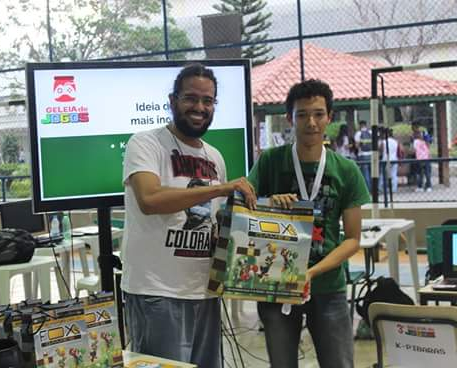

Sobre

Nascido no fim do século XX, Nícolas Ferreira é um jovem estudante do iff. Ele é formado em Eletromecânica pela Escola Técnica Estadual João Barcelos Martins(FAETEC), e está no último módulo do Técnico em Informática no IFF Campus Centro. Recentemente ingressou na faculdade bacharelado em Sistemas de Informação pelo IFF Campus Centro. Nícolas tem bastante interesse pela área de desenvolvimento de jogos, tendo a ambição de fundar uma empresa de desenvolvimento de jogos.
Ele foi um dos integrantes da equipe vencedora do premio de Ideia mais inovadora na 3ª edição da Geleia de Jogos, juntamente com os universitários Lucas Aguiar e Diogo Alves de Sistemas de Informação, e do roteirista Gabriel Areas.